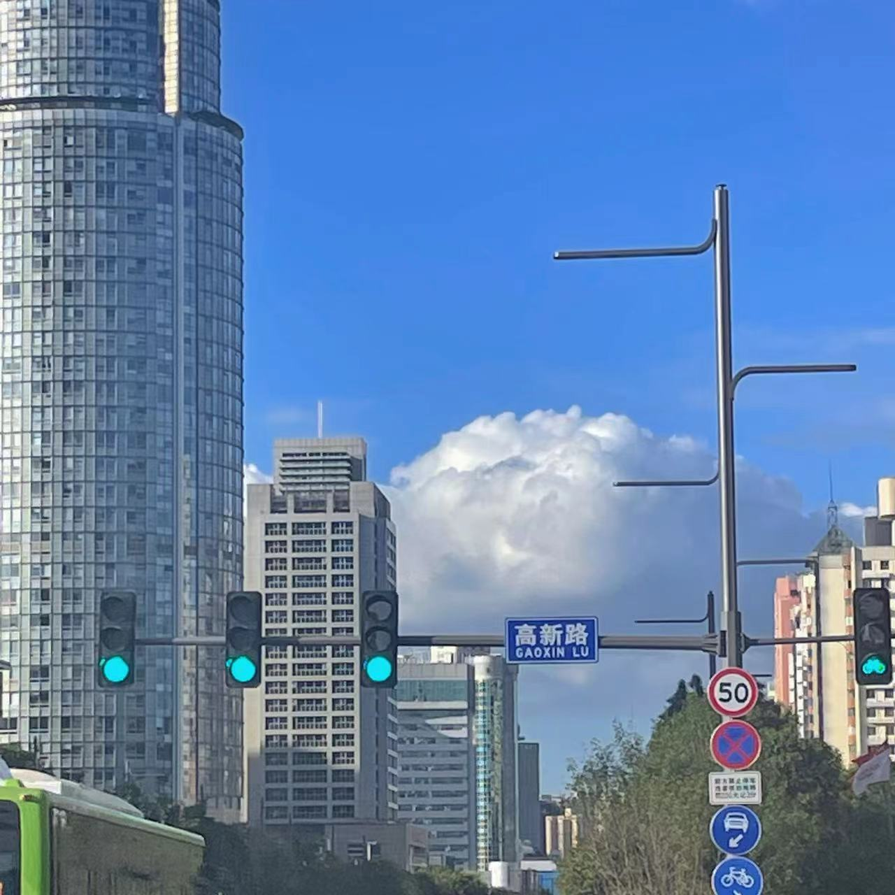
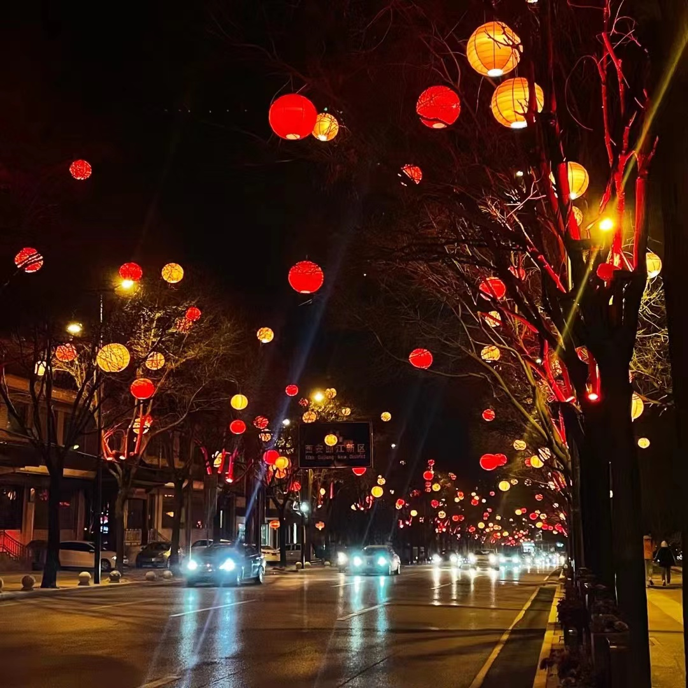
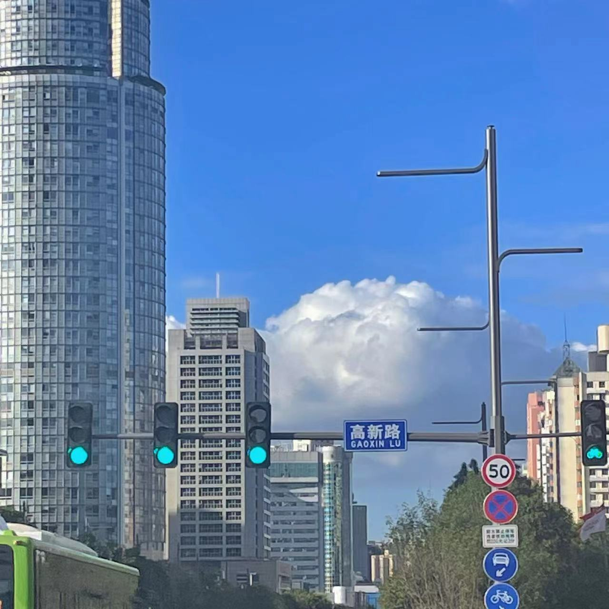
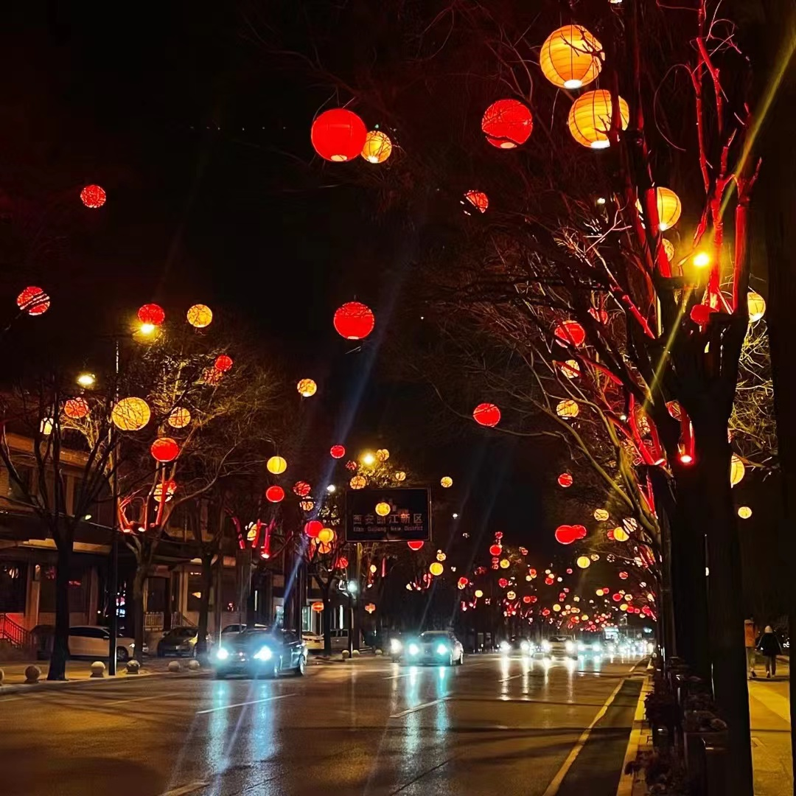
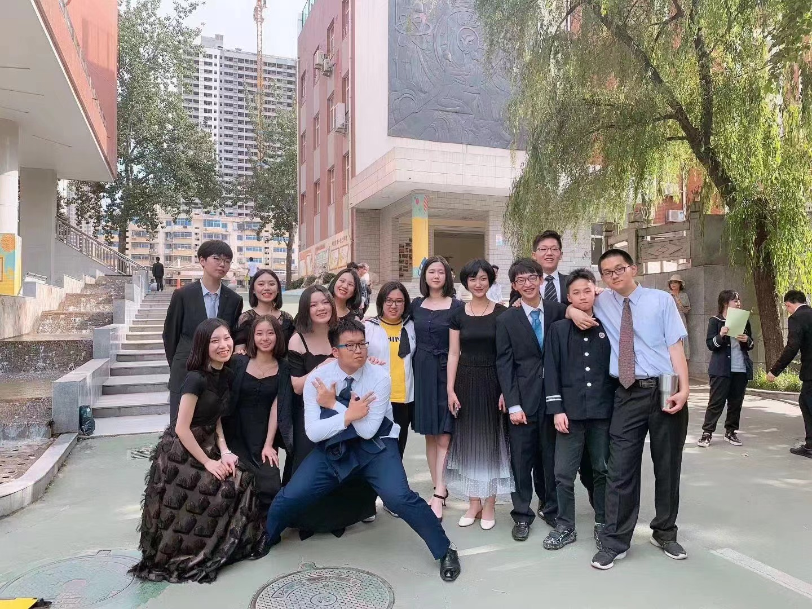
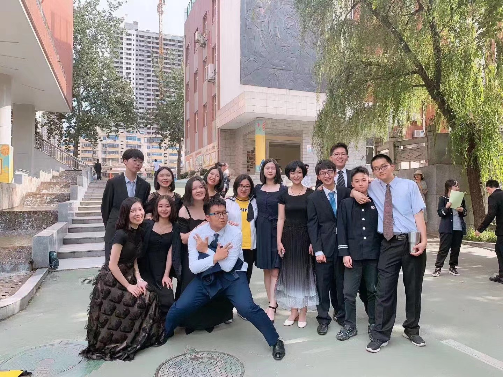

My home--Xi'an
Xi'an is a large city and capital of Shaanxi Province in central China. Once known as Chang’an (Eternal Peace), it marks the Silk Road’s eastern end and was home to the Zhou, Qin, Han and Tang dynasties' ruling houses. I miss it so much!!!
 




My high school
--Xi’an Tie Yi International High School. G1-3 foverever!!!
 


Me~~